Diffusion Models
Overview
In this project, I train my own flow matching model on MNIST. Part A explores diffusion models using pretrained models, while Part B focuses on building and training UNet architectures from scratch for flow matching. I implement single-step denoising, iterative flow matching, and class-conditioned generation.
Part 0: Setup
I used the DeepFloyd IF diffusion model and generated prompt embeddings for various text prompts. The following prompts were used throughout the project:
['a high quality picture',
'an oil painting of a snowy mountain village',
'a photo of the amalfi coast',
'a photo of a man',
'a photo of a hipster barista',
'a photo of a dog',
'an oil painting of people around a campfire',
'an oil painting of an old man',
'a lithograph of waterfalls',
'a lithograph of a skull',
'a man wearing a hat',
'a high quality photo',
'a rocket ship',
'a pencil',
'monkeys having a party',
'a rhesus monkey drinking from a bottle of wine',
'a crane and wrecking ball destroying a large tower',
'river cutting through vast valley',
'four-person rock band standing in a circle facing each other',
'oil painting of a hamster',
'anthropomorphic blue jay and anthropomorphic brown raccoon',
'house made of graphics cards',
'hamster driving a car',
'oil painting of a bright light bulb',
'oil painting of a canal',
'watercolor painting of an ear',
'watercolor painting of lips',
'oil painting of a house',
'oil painting of a boat',
'a sketch of a bunny',
'a sketch of a seal',
'']Sample Text Prompts and Generated Images
I generated embeddings for various text prompts and experimented with different num_inference_steps values. Here are 3 selected prompts and their generated outputs:
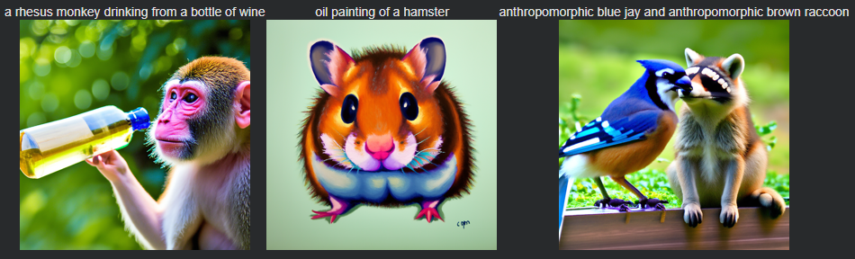
Middle: "oil painting of a hamster"
Right: "anthropomorphic blue jay and anthropomorphic brown raccoon"
Random seed used: 9001
Part 1: Sampling Loops
1.1 Implementing the Forward Process
The forward process takes a clean image and adds noise to it. I implemented the forward(im, t) function and applied it to the Campanile test image at different noise levels.

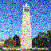
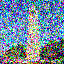
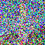
1.2 Classical Denoising
I attempted to denoise the noisy images using Gaussian blur filtering. As expected, classical methods struggle with heavily noisy images.
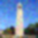
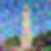
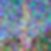
1.3 One-Step Denoising
Using the pretrained diffusion model UNet, we performed one-step denoising on the noisy images. The diffusion model does a much better job of projecting images onto the natural image manifold compared to classical methods.

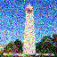
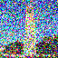
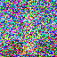
1.4 Iterative Denoising
I implemented iterative denoising using a strided timestep schedule, starting at timestep 990 with a stride of 30. This allows me to denoise images more effectively by iteratively removing noise step by step.
Denoising progress (every 5th step):
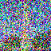
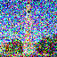
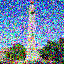
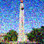

Comparison of different denoising methods:

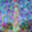
1.5 Diffusion Model Sampling
By starting with pure noise and iteratively denoising, we can generate images from scratch. Here are 5 samples generated from the prompt "a high quality photo":
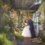
1.6 Classifier-Free Guidance (CFG)
Classifier-Free Guidance improves image quality by combining conditional and unconditional noise estimates. I implemented iterative_denoise_cfg and generated images with CFG scale of 7.5:
1.7 Image-to-image Translation
By adding noise to an image and then denoising it, we can make edits to existing images. The more noise we add, the larger the edit. This follows the SDEdit algorithm.
1.7.1 SDEdit on Campanile
Edits of the Campanile image at different noise levels [1, 3, 5, 7, 10, 20] with the conditional text prompt "a high quality photo":

Additional Test Images
Edits of 2 additional test images using the same SDEdit procedure with noise levels [1, 3, 5, 7, 10, 20] and the conditional text prompt "a high quality photo":
Test Image 1: Big Sur
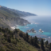
Test Image 2: Zoo
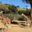
1.7.2 Editing Hand-Drawn and Web Images
SDEdit works particularly well with non-realistic images. Here are examples of web images and hand-drawn images edited using the same procedure:
Web Image: Big Sur
Hand-Drawn Images
Horse:
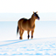
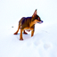
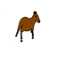
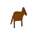
Water:
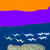
1.7.3 Inpainting
I implemented inpainting using the RePaint algorithm, which allows me to fill in masked regions of an image. Here are examples of inpainting results:
Campanile Inpainting


Minecraft Inpainting
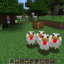
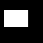
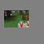
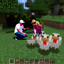
Statue Inpainting
1.7.4 Text-Conditional Image-to-image Translation
By guiding the SDEdit projection with text prompts, we can control the style and content of the generated images. Here are examples using different text prompts:
Campanile with "a rocket ship" prompt

Test Image 1: Regshow
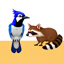
Test Image 2: Road
1.8 Visual Anagrams
Visual anagrams are optical illusions that change appearance when flipped upside down. I implemented the visual anagrams algorithm by averaging noise estimates from the original and flipped images with different prompts.
Example 1: Bunny/Seal
Example 2: Light Bulb/Canal
1.9 Hybrid Images
Using Factorized Diffusion, we created hybrid images by combining low frequencies from one noise estimate with high frequencies from another. This creates images that appear different when viewed at different distances or scales.
Example 1: Ear/Mouth
Example 2: Old Man/Hamster
Part B: Flow Matching from Scratch
Part B Overview
In Part B, I build and train UNet architectures from scratch to perform flow matching on MNIST. This includes implementing single-step denoising, time-conditioned flow matching, and class-conditioned generation with classifier-free guidance.
Part 1: Training a Single-Step Denoising UNet
I start by building a simple one-step denoiser that maps noisy images to clean images using a UNet architecture.
1.1 Implementing the UNet
I implemented a UNet architecture with downsampling and upsampling blocks with skip connections. The architecture uses Conv2d, ConvTranspose2d, BatchNorm2d, GELU activations, and AvgPool2d operations with a hidden dimension D = 128.
1.2 Using the UNet to Train a Denoiser
I trained the UNet to denoise noisy images by optimizing an L2 loss. For each training batch, I generated noisy images from clean MNIST digits using a noising process with random noise levels σ.
Visualization of the Noising Process:
I visualized the noising process by applying different noise levels σ to normalized clean images. As σ increases, the images become progressively noisier, eventually approaching pure noise.
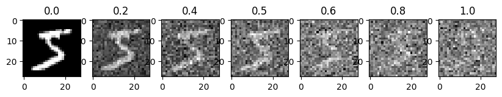
1.2.1 Training
I trained the denoiser on the MNIST training set with the following setup:
- Dataset: MNIST training set, shuffled
- Batch size: 256
- Epochs: 5
- Model: UNet with hidden dimension D = 128
- Optimizer: Adam with learning rate 1e-4
- Noise level: σ = 0.5 (applied randomly during training)
Training Loss Curve:
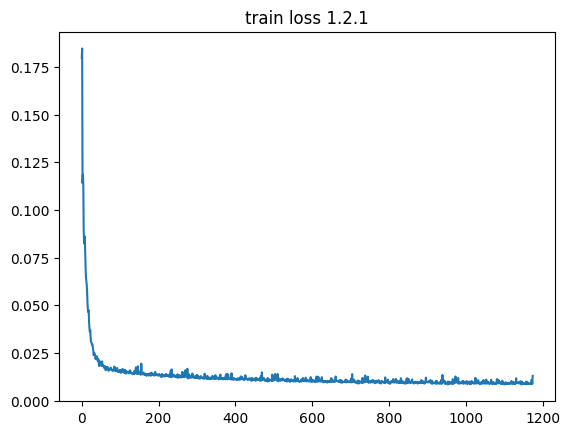
Sample Results on Test Set:
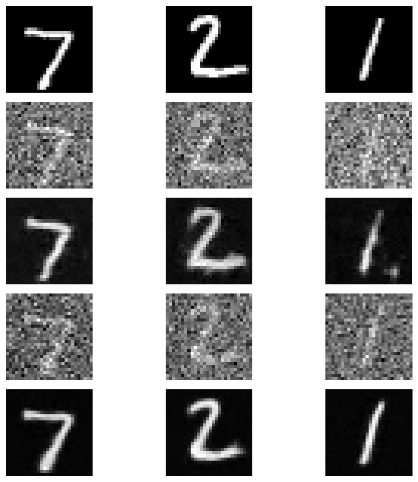
1.2.2 Out-of-Distribution Testing
I tested the denoiser on test set digits with varying noise levels that it wasn't trained on. This shows how the model generalizes to different noise levels.
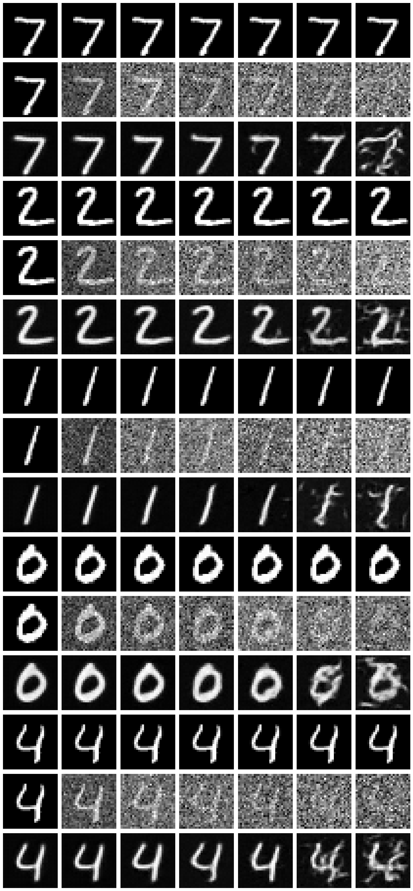
1.2.3 Denoising Pure Noise
To explore denoising as a generative task, I trained the model to denoise pure random Gaussian noise (where x_noisy = ε with ε ~ N(0, I)). This allows the model to generate images from scratch by starting with pure noise.
Training Loss Curve:
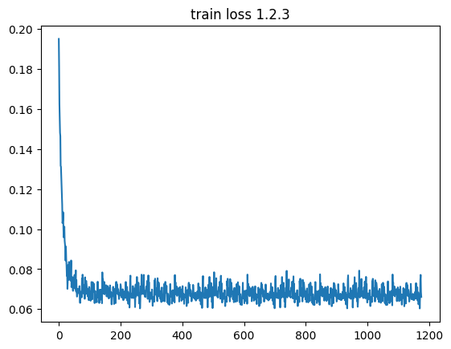
Sample Results:
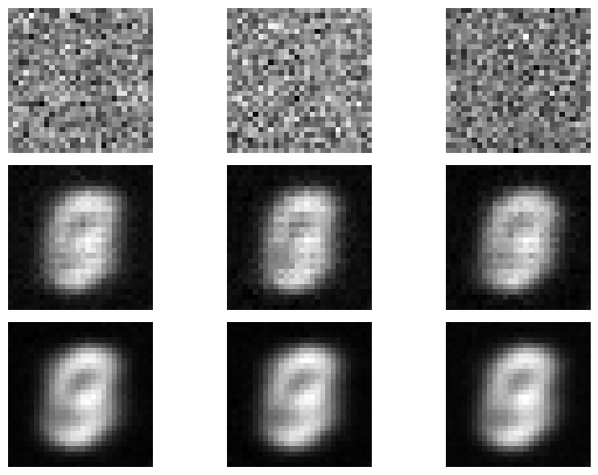
Patterns Observed:
When sampling from the denoiser trained on pure noise, I observed that the outputs tended to converge to blurry, averaged representations of digits rather than distinct, sharp digit images. This happens because with an MSE loss, the model learns to predict the point that minimizes the sum of squared distances to all training examples. In other words, this is the centroid of the training distribution.
Part 2: Training a Flow Matching Model
To achieve better generative results, I implemented iterative denoising using flow matching. Instead of one-step denoising, I train a UNet to predict the "flow" from noisy data to clean data, allowing for iterative refinement.
2.1 Adding Time Conditioning to UNet
I modified the UNet architecture to accept a time conditioning signal t ∈ [0, 1] using FCBlocks (fully-connected blocks). The time signal is embedded and used to modulate the unflatten and upsampling layers, allowing the model to condition its predictions on the current timestep in the denoising process.
2.2 Training the UNet
I trained the time-conditioned UNet to predict the flow at timestep t given a noisy image x_t. The training setup:
- Dataset: MNIST training set, shuffled
- Batch size: 64
- Model: Time-conditioned UNet with hidden dimension D = 64
- Optimizer: Adam with initial learning rate 1e-2
- Learning rate scheduler: ExponentialLR with gamma = 0.9 (applied after each epoch)
- Training: Random timesteps t and random noise are sampled for each batch
Training Loss Curve:
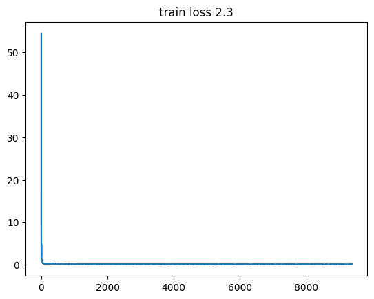
2.3 Sampling from the UNet
I used the trained time-conditioned UNet for iterative denoising by starting with pure noise and iteratively applying the predicted flow. The sampling process uses Algorithm B.2 to generate images from scratch.
Sampling Results:
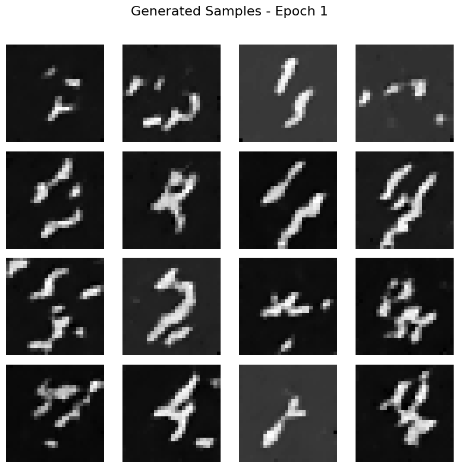
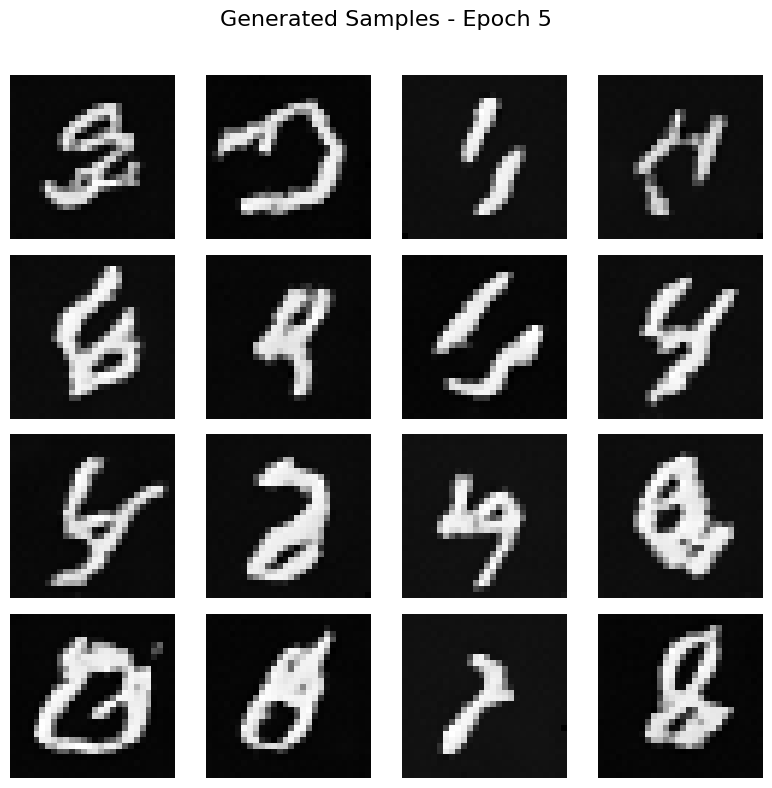
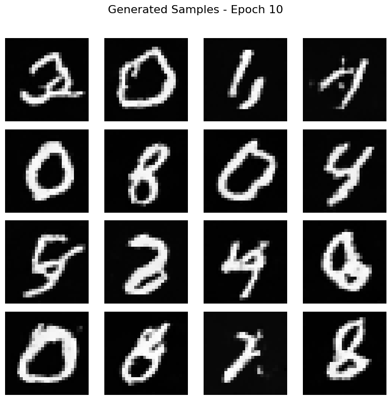
The results show legible digits emerging from pure noise, with quality improving as training progresses. While not perfect, the iterative flow matching approach produces much better results than one-step denoising.
2.4 Adding Class-Conditioning to UNet
To improve results and provide control over generation, I added class-conditioning to the UNet. The class vector c is a one-hot encoding of the digit class (0-9). I implemented classifier-free guidance by dropping the class conditioning 10% of the time (p = 0.1) during training, setting c = 0 for unconditional generation.
2.5 Training the UNet
I trained the class-conditioned UNet using the same setup as the time-only model, with the addition of class conditioning. The model learns to generate specific digits when conditioned on a class, and can also perform unconditional generation.
Training Loss Curve:
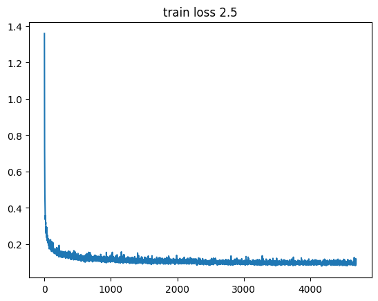
2.6 Sampling from the UNet
I sampled from the class-conditioned UNet using classifier-free guidance with guidance scale w = 1.5. This allows for controlled generation of specific digits while maintaining good image quality.
Sampling Results with Learning Rate Scheduler:
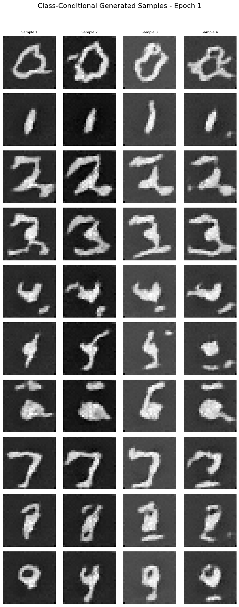
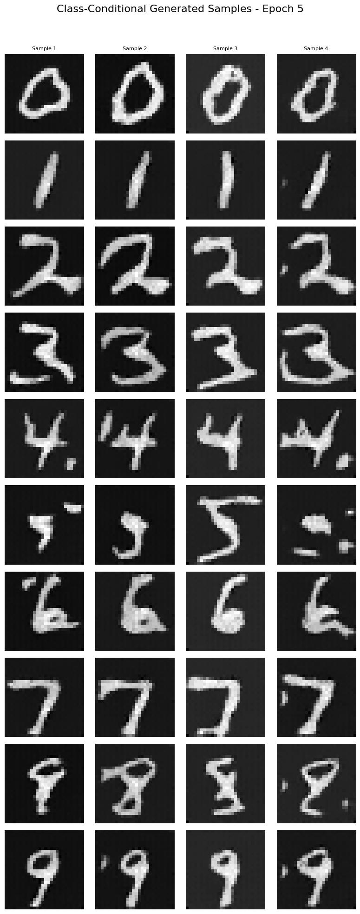
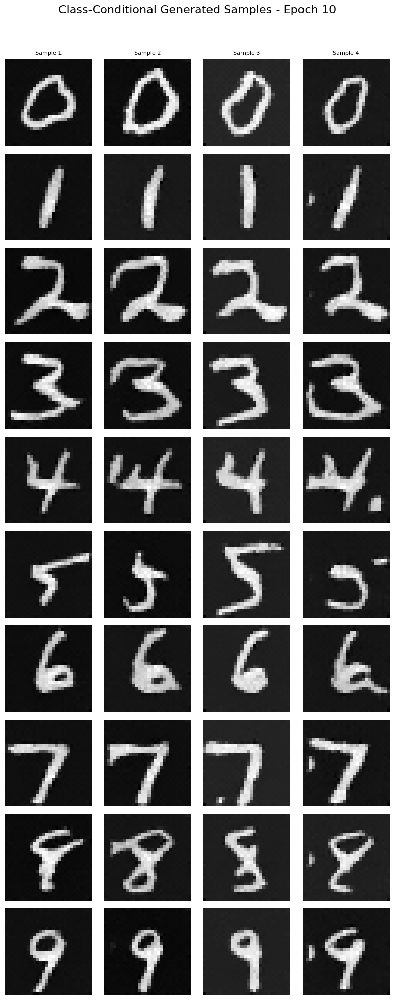
Sampling Results without Learning Rate Scheduler:
I removed the exponential learning rate scheduler and compared the results. It turns out that the model is quite robust to choice of learning rate and did not need any changes.
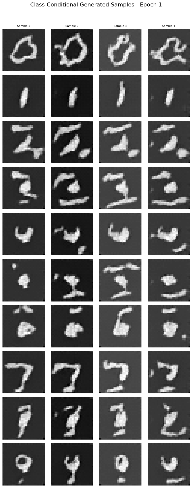
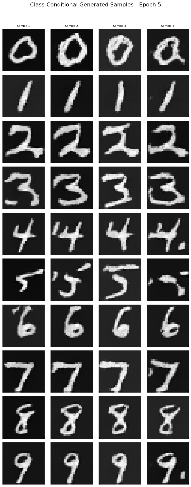
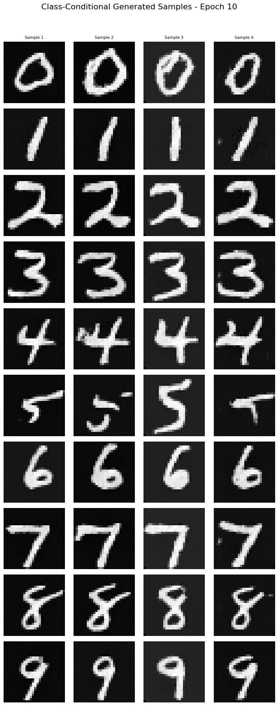
Description of Changes:
To maintain performance without the exponential learning rate scheduler, I didn't have to do anything. It turns out that the model is quite robust to choice of learning rate.
University of California, Berkeley